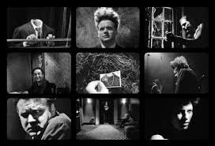

|  |
Eraserhead (Cabeza borradora, 1977) es la primera película de David Lynch y una de las operas primas más impactantes en la historia del cine, fue protagonizado por el actor Jack Nance. Se trata de un filme abstracto con escenas oníricas y perturbadoras que generan diferentes interpretaciones. Es considerada una película de culto. |
|
Información del Director |
||
 (Missoula, 20 de enero de 1946), conocido como David Lynch, es un director de cine, actor, productor de música electrónica y guionista estadounidense. Su actividad artística se extiende asimismo al terreno de la pintura, la música, la publicidad, la fotografía, e incluso el diseño de mobiliario. Reconocido admirador de Stanley Kubrick, Jacques Tati, Ingmar Bergman y Werner Herzog, su amor por el dadaísmo y el surrealismo queda patente en algunas de sus películas, cuya misteriosa atmósfera mezcla lo cotidiano con lo soñado, escapando a veces a la comprensión exhaustiva del espectador. Estos rasgos están presentes desde su primer largometraje, Eraserhead (1977). Su segunda película, El hombre elefante (1980), fue un gran éxito crítico y comercial, recibiendo 8 nominaciones a los Premios Óscar. Su tercer film, Dune (1984), no contó con el respaldo de la crítica y supuso un fracaso comercial. Seguidamente dirigió Blue Velvet (1986), con la que volvió a recibir la aclamación crítica y una nueva nominación al Óscar en la categoría de mejor director. |
||
Análisis de Pelicula |
Una mera descripción del argumento no hace justicia a la auténtica pesadilla audiovisual a la que Lynch dio forma en esta sensacional película cuyo rodaje de bajísimo presupuesto le llevó incontables años de trabajo. De entrada solo por el excepcional trabajo de ambientación, que compensa la notoria escasez del presupuesto, Cabeza Borradora sería una película más que remarcable y a tener en cuenta. Para compensar los límites presupuestarios, Lynch supo jugar muy inteligentemente con la fotografía en blanco y negro y una iluminación decadente que encajan con ese contexto industrial; pero sobre todo, donde más destaca es en el sonido. Podría perfectamente hacerse un análisis exhaustivo de Cabeza Borradora basándose únicamente en el tratamiento sonoro que hace a lo largo del metraje. Literalmente en cada escena se nota que el cineasta prestó atención a todos los detalles relativos a la banda sonora, desde los efectos de sonido que producen los personajes al ruido de fondo que se oye continuamente en casi todo el metraje, sonidos industriales y aparatos de toda índole que transmiten la sensación de un mundo mecanizado pero desgastado. A cambio, la tensísima escena de la cena es de las pocas donde se produce el silencio absoluto. A ese cuidadoso trabajo de ambientación hay que sumarle la más que conocida capacidad del cineasta por crear situaciones enrarecidas que van desde la tensa cena con la familia de Mary (pocas veces he visto reflejado tan claramente en la pantalla la incomodidad que suponen este tipo de inevitables actos sociales) a, claro está, la llegada al hogar de Henry de ese extraño ser que teóricamente es su hijo. Ni siquiera a día de hoy estamos muy seguros de qué es exactamente esa cosa, no en el contexto de la película, sino en la vida real, ya que Lynch lo mantuvo en el más absoluto secretismo y se hizo prometer a los implicados en el rodaje que nunca revelarían nada al respecto. |
|
| Informacion y contactos del autor Diego Alejandro Tellez Ramirez. Estudiante del CECyT 3 (IPN), del grupo 2IM4. |
|
|---|---|
Otras paginas que puedes visitar Practica de prueba con imagenes |
|
Los perros, el mejor amigo del hombre |
|
Delegaciones |
|
Tablas en HTML |
|
Contactos |
|
| Escribe a mi correo: mensgpriv@gmail.com |
|